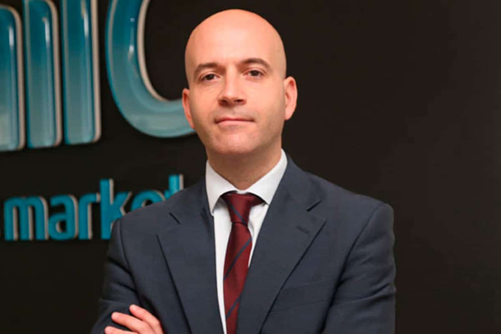
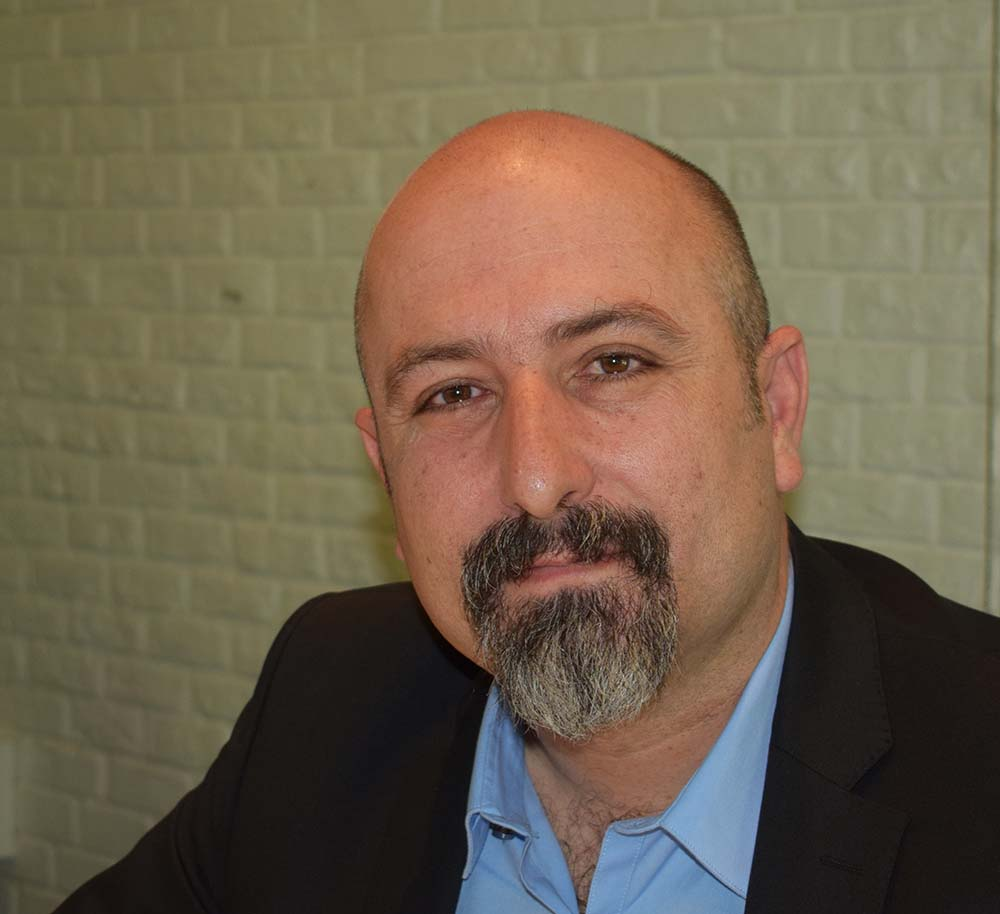
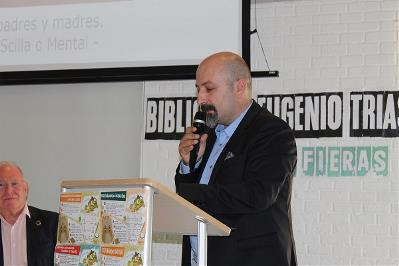

Testimonios
Estos testimonios se enmarcan en la sección de libre publicación de SaluMent, cuyo objetivo, como su
nombre indica, es promover la participación de
las lectoras y lectores. SaluMent no se hace responsable ni del contenido ni de la forma de los
artículos publicados en esta sección.
La unión hace la fuerza

Las vulneraciones de derechos son cada día más virulentas, cuando parecía que las contenciones
estaban ya en vías de paralización,
había consenso e incluso a través de Ley.Ahora vienen otra vez con ese café sin azúcar, a intentar
hacernos retroceder tanto
esfuerzo y lucha colectiva, intentando nuevamente sacar adelante el Protocolo Adicional del Convenio
de Oviedo, el cual rechazo
absolutamente… Estamos intentando tener espacios más saludables para poder afrontar nuestra
recuperación y se está preparando un
borrador de Ley de Salud Mental para erradicar este tipo de prácticas consideradas tortura y que son
de todo menos “terapéuticas”.
La diversidad es tan injusta con las personas que padecen un problema de salud mental, que para la
sociedad y para los organismos
oficiales, se separan de manera acentuada y se imponen los jodidos prejuicios y estigma.… A tenor de
los tiempos que están
aconteciendo van contra los continuos llamamientos de la OMS de salvaguardar la salud mental como
una prioridad.
Cabe como reseñable que ahora sé con más conocimiento de causa lo que pasan personas con discapacidad
visual y es lamentable, el
trato que reciben hasta que se ponen en su sitio y piden una hoja de reclamaciones o se pide que se
llame a la persona responsable…
Una persona trabajadora tiene la obligación de facilitar la accesibilidad y las cuestiones que venga
a resolver una persona con
algún tipo de discapacidad y a esto estamos a años luz de otros países, es lamentable el trato
denigrante y vejatorio que recibimos
las personas con algún tipo de problema de diversidad funcional o discapacidad, y que te contesten
que si no puedes ver tendrás
alguien que sí lo pueda hacer. Esto dice mucho de la absoluta ignorancia, falta de preparación y
empatía que tienen algunas personas
de lo que significa estar trabajando.
Las vulneraciones constantes en el ámbito de la discapacidad hacen que me haya planteado varias
cosas, y es que veo que vamos
haciendo la “guerra” cada organización o personas por nuestra cuenta, y quizás sería mejor y estoy
seguro de ello de ir todas a una.
No solamente tenemos el trato deshumanizado y corporativo en el aspecto médico, hay muchas más
problemáticas, empleo, pensiones,
exceso de medicación, exclusiones, estigma y prejuicio, acceso a vivienda, derecho a una vida digna,
etcétera… Un ejemplo que ya
puse en su día… ¿Saben que cuando se suele contratar un seguro para ir a un concierto, hay una
cláusula que, si no acudes por tener
un diagnóstico de ansiedad o depresión y no te has encontrado bien ese día, no tienes derecho a la
devolución porque la cláusula
excluye esto? Pues como esta barbaridad hay muchísimas…
Yo ahora no estoy tan activo y estoy priorizando otras cosas en mi vida, me toca un tiempo de retiro
y de hacer otras cosas, me
gustaría dejar este mensaje de esperanza y de unión.
Dejo ahí la reflexión pues hace tiempo que vengo mascándola y me gustaría que, aunque sea utópico se
convirtiese en realidad.
Jose Luis Herrera, voluntario y colaborador de Salud Mental La Palma
El mensaje real
No sería justo acallar mi sentimiento de privilegio al verme escuchado por Su Majestad la Reina
Letizia. No sería justo, pues no
es otro mi sentido que que representar a las personas con problemas de salud mental, y que por
amplia circunstancia pertenece a
los Órganos de Gobierno de SALUD MENTAL ESPAÑA.
Aprendí en su día, en los magníficos cursos para portavoces que realiza la Confe, que el mensaje debe
iniciarse en el punto donde
se encuentra el receptor. Así, es posible que la Reina Letizia sepa que las personas con problemas
de salud mental pueden llegar
a tener una vida normalizada; que es sabido el estigma social que nos prejuzga, y que de ahí nace la
necesidad de visibilizar
nuestras aspiraciones.
Pero, más allá, es mi inquietud que el discurso sobre salud mental no empiece en el momento de una
descompensación, sino que
miremos a la salud mental como un activo vital al que tiene derecho toda persona, y que debe
cuidarse como a un tesoro de
envidiable fortuna. La labor de cuidado debe ser un aspecto central de la vida social y
política.
Con la pandemia del COVID-19 nos hemos adentrado en un territorio de máxima vulnerabilidad. Según los
primeros estudios el 46% de
la población española ha sentido el malestar psíquico, y en porcentaje parecido la gente ha ido
perdiendo el optimismo y la confianza.
Es mi razón que la salud mental no es un término absoluto, y así, si identificamos la salud mental
como toda experiencia positiva
y enriquecedora, de la misma forma, la incertidumbre existencial puede abocarnos a una pérdida de la
constante de salud. Es el
principio de una búsqueda, y por momentos, nos vemos en el centro de un océano interminable.
La salud mental no debe mirarse como a un rudimento más de la vida, sino como un elemento fundacional
del individuo. Esto es así
porque sin salud mental no hay bienestar, son términos hermanos. Y si no hay salud mental, ¿de qué
te sirve todo aquello que posees?
Artículo de Basilio García Copín, integrante del Comité Pro Salud Mental
Testimonio sobre Violencia

Y pues resulta que daría igual cuándo lo leas o pienses si existe realidad o ficción (ya que se nos
sigue acusando, en tantas ocasiones
de no estar en la realidad y andar por la fantasía).
¡Me agredieron!, fue durante un ingreso hospitalario por la seguridad privada, primero me redujeron,
siendo el ingreso voluntario para
sedarme y recurrir a contenciones mecánicas, cuando me subí solo a la camilla, el segundo motivo,
llamar a gritos a los familiares que
me pudieron visitar durante 5 minutos a planta, cuando recién se habían ido; resultado de ello,
llamada del psiquiatra a seguridad,
con la denigrante situación de reducción violenta y anclaje a la cama de la planta del hospital,
donde yo por suerte, anduve solamente
30/40 minutos, pero que un compañero llevaba días pegado a su cama en la habitación contigua.
El odio y la opresión que hemos sentido y padecido por la acción desproporcionada de las diferentes
expresiones de cuerpos de seguridad,
donde primero actúan y después preguntan, junto a muchos profesionales de la psiquiatría, no van en
consonancia con la paz o al menos
la estable y tranquila situación, que ansiamos conseguir, sin magnificaciones de violencia, en
cualquiera de su formas.
Jonatan Yuste
Representante de la federación murciana en el Comité Pro Salud Mental En Primera Persona de SALUD
MENTAL ESPAÑA.
Fui torturado por falta de medios y recursos

Hace bastantes años mientras participaba en una reunión de la comisión de salud mental del Servicio
Canario de Salud, un médico psiquiatra
pedía disculpas públicas porque asumía que el uso de las contenciones químicas y mecánicas se
producían porque él no contaba con personal
de urgencias suficiente. Yo ya lo había experimentado en otras ocasiones. Y hace tan solo unos meses
yo volví a ser víctima de esta
precariedad, pero lo que más me sorprendió es que todo formaba parte de un protocolo. El hecho en sí
de ingresar en urgencias con una
crisis de salud mental, es el detonante para que se active de manera automática el protocolo de
contención. Y eso también supone que, si
no hay camas en la unidad de internamiento, estarás atado tantos días seguidos en urgencias como
tiempo quede para conseguir una plaza
disponible en la unidad de internamiento.
Aunque yo nunca he estado enterrado vivo, considero que es una experiencia similar.
La inmovilidad de todas mis extremidades y mi tronco, sobre una camilla, me provoca unas sensaciones
de angustia y ansiedad insoportables,
y cuando más agitado estoy más dolorosa es la experiencia. Mi mente indica a mi cuerpo que quiere
moverse para estar más cómodo pero no
obtiene resultado. Boca arriba van pasando los días en el pasillo de unas urgencias llenas de
personas con todo tipo de dolencias. Viene
el psiquiatra cada día, y cada día me entrevista mientras lo miro y le hablo atado desde la camilla.
Me desatan para ir a ducharme. Lo
hago de forma autónoma, colaborando, y cuando termino me conducen a la camilla donde me vuelven a
atar. El turno considera que me pueden
desatar, que estoy tranquilo, pero cuando llega un nuevo turno, con otro personal, vuelven a atarme
porque es lo que está escrito. Es el
protocolo que se instauró desde que pisé la entrada de urgencias. Soy un paciente psiquiátrico.
Soy un paciente psiquiátrico, así que cuando ingreso en urgencias, llaman a seguridad para que esté
presente mientras me desvisto para
ponerme el pijama del hospital. Tardo más de lo que debo en terminar de desabrocharme la camisa, y
el personal no tiempo, ni medio minuto,
y me reducen entre los dos seguritas y los cinco auxiliares y enfermeros que han llamado previamente
para presenciar como me desnudo en
un habitáculo de dos metros cuadrados. Me colocan en la camilla que ya habían preparado de antemano
con las correas. Soy un paciente
psiquiátrico, con una urgencia médica y tengo mucho miedo de lo que me está sucediendo, no entiendo
por qué no me han cuidado desde que
llegué al hospital, por qué no está mi familia conmigo, y estoy en shock. Un shock que no tenía
antes de ingresar. No entiendo por qué
me han dejado en un cuarto que parece de limpieza, han cerrado la cortinilla, y me han dejado solo.
Soy un paciente psiquiátrico, a lo
mejor es por eso.
No es porque sea un paciente psiquiátrico. Me duele decirlo, porque está situación la están viviendo
todos los días otras personas que
ingresan. Esta situación no es pasado, es el presente y está sucediendo ahora. No es a lo mejor. Es
por esto. Y toda esta precariedad
deja un huella y un trauma imborrables para el resto de nuestras vidas, las nuestras, y las de
nuestras familias.
Enrique González
Presidente de la Federación Salud Mental Canarias.
La Mente Respira
Viene aquí una nueva versión sobre salud mental, partiendo de la experiencia propia, y poniéndola en
relación con esa cualidad tan
espiritual como es el silencio de los adentros. La conjetura es que la calidad de la salud mental
está directamente asociada a la
calidad del silencio interior. En ausencia de salud, los pensamientos que son las palabras se
agolpan sin solución de continuidad,
y sin que sean suficientes a la hora de conformar un relato con que explicar la experiencia que
proviene de los sentidos. En un
mayor grado de afectación, las ideas llegan a ser reflejas y no responden a un motivo ni a ninguna
utilidad.
Si observamos las páginas de un libro veremos que el lenguaje se compone de palabras y silencios,
siendo ambos igual de necesarios.
El silencio pues es el estado previo a la palabra, y necesario para alcanzar el entendimiento.
Postulo así que la lectura de los
pensamientos sigue las mismas normas que la lectura de los cuadernos, y que solo en ese orden, de
palabras y silencios, podremos
asistir al despertar de nuestras conciencias, a vislumbrar la diferencia entre lo que es salud y lo
que es contrario al bienestar.
En un estado óptimo de conciencia descubriremos que la mente tiene la facultad de manipular los
pensamientos, y de marcar la
pausas que son los silencios, hasta dar con el fin último que es la sensación de salud.
Si damos por buenas estas bases, y las trasladamos a un modelo médico de recuperación, veremos la
importancia de educar en la lectura
de los pensamientos y en la interpretación de los silencios. Y veremos, asimismo, que la búsqueda de
la salud es también la búsqueda
de un relato que nos libere de la indefinición y de la inconcreción. Otra cosa es el silencio
profundo, el disfrute del silencio, la
contemplación, ya que, para lograrlo, intuyo, es preciso una intensa formación cultural, o una
estructuración sistémica del
conocimiento. En mis aventuras por los caminos tuve encuentros con monjes del silencio, y que me
hacían ver su gran bagaje como
lectores, y yo no comprendía en esos momentos. Durante mi padecimiento, en el fondo de mi
habitación, el silencio era sinónimo de
sufrimiento. Solo viendo la televisión lograba la conciliación del silencio, pero era un silencio de
muy poca calidad.
Al fin, en mi preparación como aficionado a la escritura, encontré sentido a lo que me decían esos
hombres solitarios, entregados al
silencio. Puede que mi pasión por darle una forma al idioma no tenga mayor trascendencia, pero a mí
me sirve para encontrar belleza
en el silencio, al contrario que en mis años peores. Y agachado sobre una hoja en blanco puedo
animar a los sufrientes que busquen un
relato de su experiencia, porque es en las palabras y en los silencios donde se halla la verdadera
verdad: la salud mental.
Basilio García Copin Miembro del Comité Pro Salud Mental En Primera Persona de SALUD MENTAL ESPAÑA.
Alza tu Voz
Creemos en la recuperacion a través de la acción, la fuerza a través de la diversidad y el
poder a través de la colaboración.
Todo el mundo merece la oportunidad de vivir una vida sana, feliz y productiva. Las personas
que experimentan retos de salud mental
pueden mejorar. Hablando abiertamente y honestamente acerca de la salud mental, podemos
ayudar a hacer eso posible. Así que haz una
promesa. Díganos cómo esta fortaleciendo el impacto del Movimiento de Salud Mental y
orientar a cada uno de los lectores.